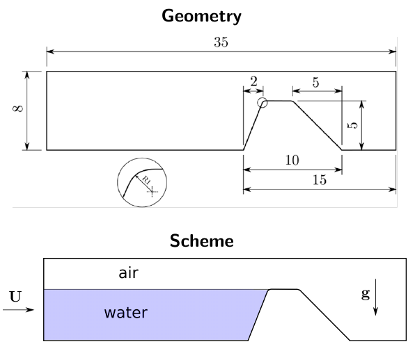
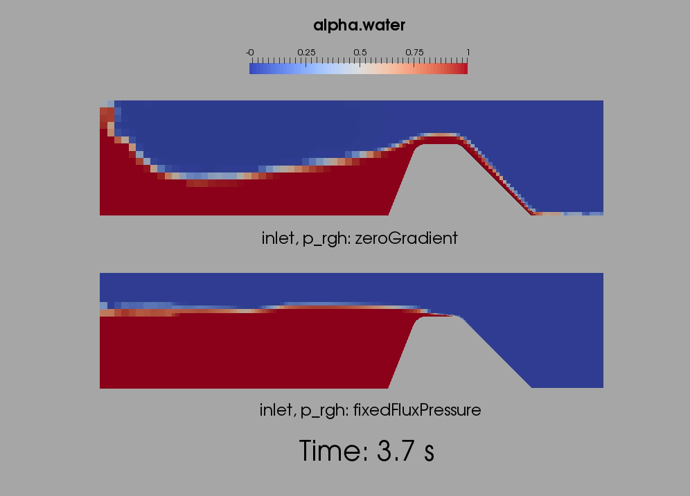

Instructor: Victoria Korchagova, ISP RAS (Russia)
Training type: Intermediate
Session type: Lecture with examples
Software stack: OpenFOAM 4.1, OpenFOAM 3.0.x
Developers of this session:
Development team website: http://unicfd.ru
Presentation language: English
Description:
Due to several changes made in OpenFOAM 2.3 and newer versions, this session aims to teach you how to setup your cases accordingly to run with interFoam.
This will be a hybrid type of session: the training track will be presented as a lecture with examples, which consists of two parts. The first stage is the discussion on internal structure of interFoam solver: governing equations and approximation techniques. The second stage is the training session where the updated “Spillway” tutorial (see figure below) and Rayleigh-Taylor instability (see figure after “Spillway” tutorial) will be presented.

The structure of the training course is the following.


After running simulation, we will obtain evolution of hydrodynamic fields (velocity and pressure and liquid volume fraction) for RT and Spillway cases - see animation.
The attendees will be prompted to do all the steps themselves during the session. For reference, link to the wiki page of the original “Spillway” tutorial: https://www.hpc.ntnu.no/display/hpc/OpenFOAM+-+Spillway+Tutorial
Materials of this tutorial are located at git archive and can be downloaded from http://www.github.com